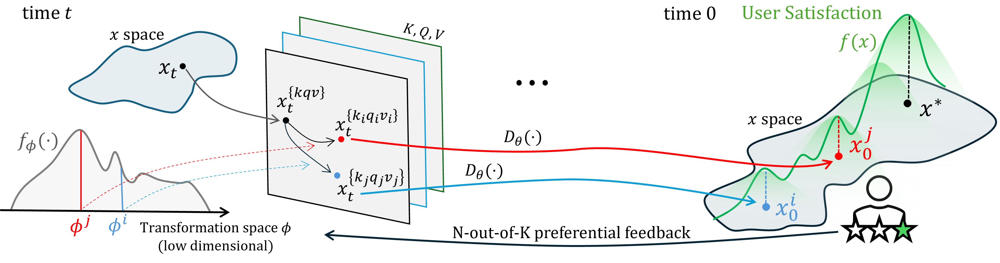
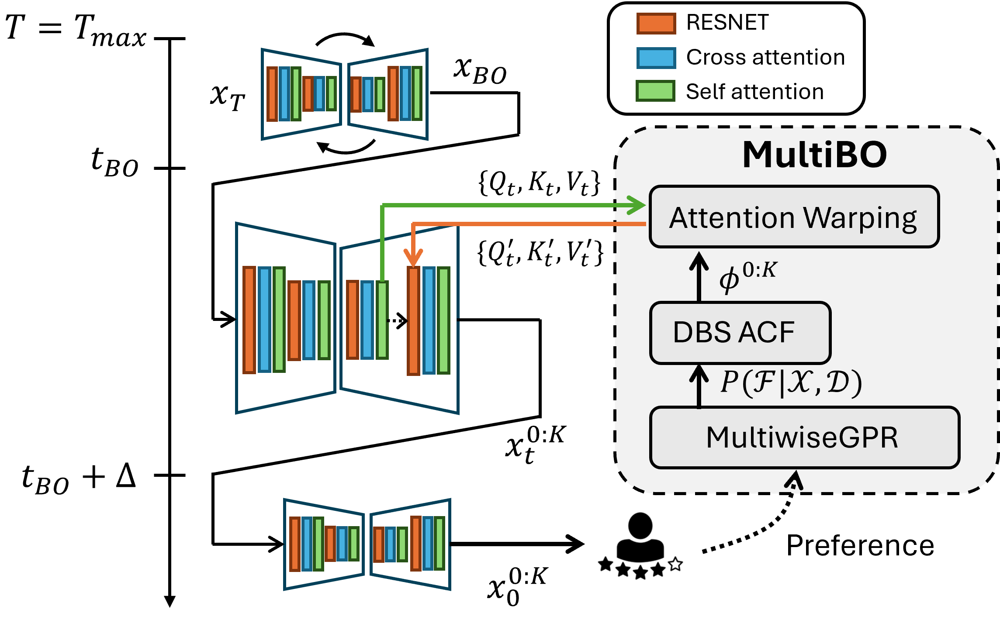
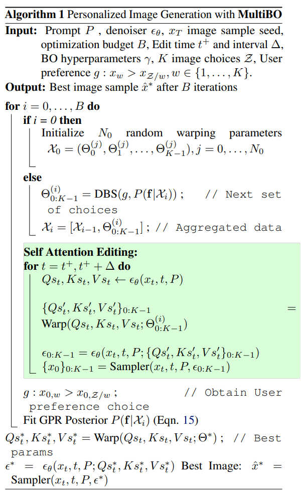
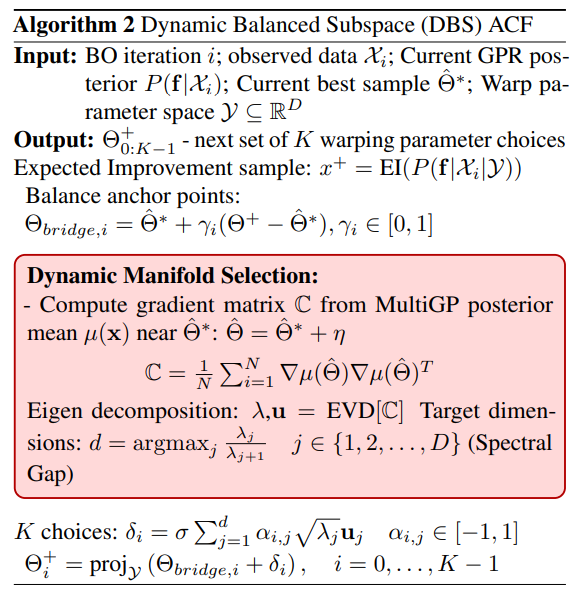
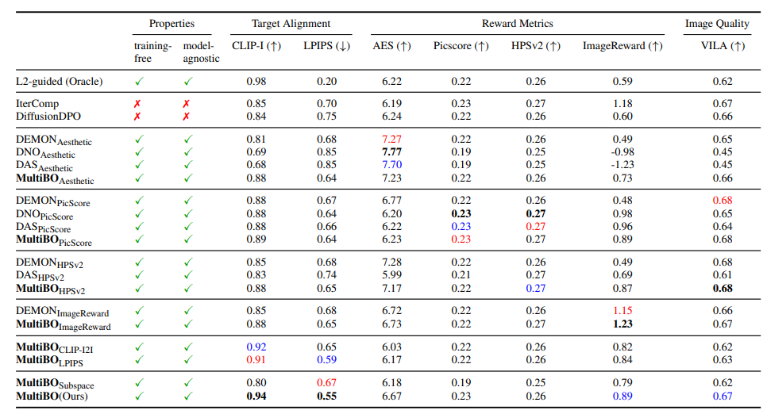
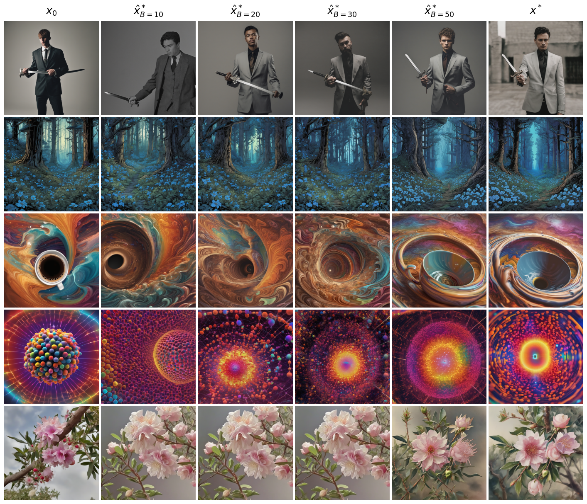
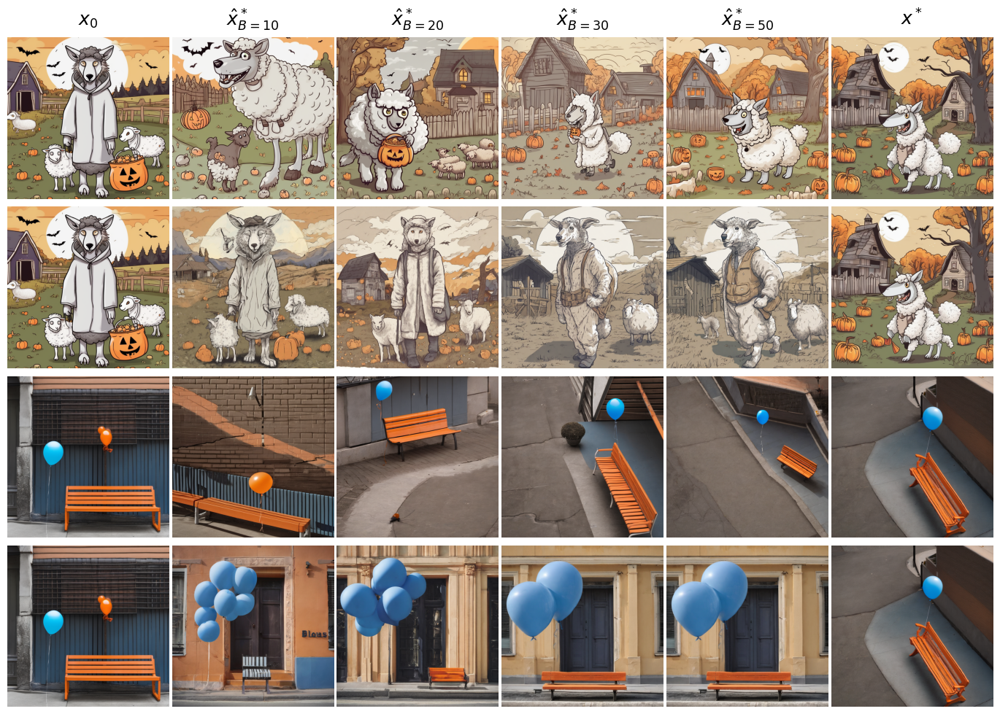
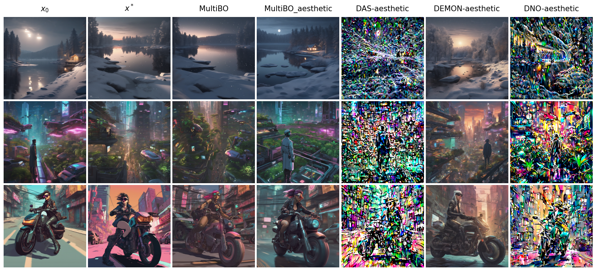
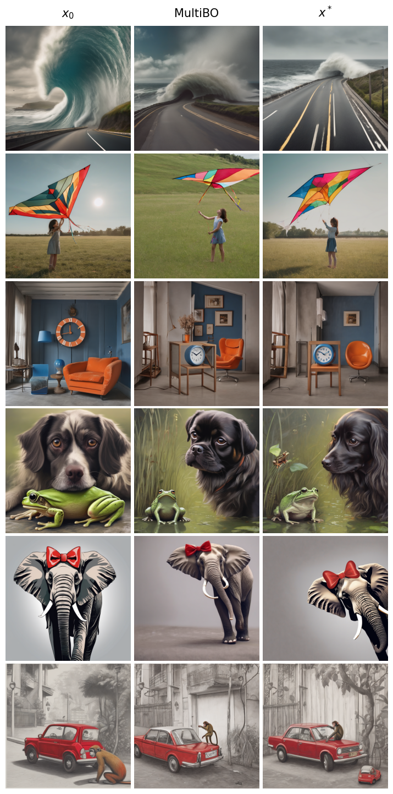

Consider the scenario in which Alice has a specific image $x^*$ in her mind, say, the view of the street in which she grew up during her childhood. To generate that exact image using generative models, she guides the model with multiple rounds of prompting and arrives at an image $x^{p*}$. Although $x^{p*}$ is reasonably close to $x^*$, a gap remains between them and Alice finds it difficult to close that gap using language prompts. This paper aims to narrow this gap by observing that even though language has its limits, Alice might be able to tell when a new image $x^+$ is closer to $x^*$ than $x^{p*}$. Leveraging this observation, we develop MultiBO (Multi-Choice Preferential Bayesian Optimization) that carefully generates $N$ new images as a function of $x^{p*}$, gets preferential feedback from the user, uses the feedback to guide the diffusion model, and ultimately generates a new set of $N$ images. We show that after several rounds of user feedback, it is possible to arrive much closer to $x^*$, even though the generative model has no information about $x^*$. Qualitative scores from $25+$ users, combined with quantitative metrics compared across $6$ different baselines, show promising results, suggesting that even weak feedback signals from humans can go a long way towards personalized image generation.>
In conventional diffusion, \( D_\theta(\cdot) \) denoises a noisy image \( x_t \) to \( x_0 \).
Our goal is to arrive at \( x^* \) by performing a human-in-the-loop optimization on \( x_t \) as follows:
\[ \underset{v}{\arg \min} \; f(x^*) - f\!\left(D_\theta(x_t + v)\right) \]where \( f \) is the user's satisfaction function, maximized at \( x^* \). Unfortunately, \( f(\cdot) \) is unknown—a blackbox function—hence there is no gradient to be obtained.
However, it is possible to sample \( f(\cdot) \), meaning that we can query the user for feedback for any given image \( D_\theta(x) \). Assuming such feedback, we can adopt well understood Bayesian optimization methods using Gaussian Process Regression (GPR), explained in Sec. Related Work.
This method will propose judiciously chosen variants of \( x_t \), say \( x_t^j \), and the user will rate how close \( D_\theta(x_t^j) \) is to \( x^* \). GPR can utilize this feedback to update its predictions, eventually finding \( D_\theta(\hat{x}_t^*) \) that is arbitrarily close to \( x^* \). Of course, to reduce user burden, the number of user queries needs to be limited to a budget \( B \).

Problems arise in realizing this high-level idea.
① Operating GPR in the high-dimensional pixel space is very difficult. The optimization must be re-cast to a much lower-dimensional space, while ensuring that the manifold of correct images, at time \( t \), can be reached from \( x_t \).
② Giving numerical feedback, \( f(D_\theta(x_t^j)) \), is known to be difficult for users because they may not be able to quantify how much worse a given \( D_\theta(x_t^j) \) is compared to \( x^* \). However, it is much easier to give a preference between a pair of images, or from a set of \( N \) images.
A user-friendly solution needs to design the GPR framework in a suitable low-dimensional space, while plugging in the user's preferential feedback into it.
Past work has made progress where diffusion models leverage human preference. For example, prior work trains global reward models, where volunteers express preferences between pairs of images; this reward model becomes a proxy for human preference, which ultimately guides the denoising vector.
Similar ideas exist in blackbox optimization through preferential likelihood models, where the framework can accommodate pairwise preferential feedback from users. However, when the function domain is high dimensional, and when a user's preference is pairwise, mapping the function reasonably well incurs excessive user feedback. Reducing user burden calls for richer preferential information, made compatible with a lower-dimensional space, to speed up the overall optimization.
MultiBO contributes by observing that multi-choice preference queries give far richer information to the optimization, and shows that such \( K \)-out-of-\( N \) feedback can be mathematically accommodated by updating the likelihood model and the acquisition function in the GPR framework.
Moreover, building on the empirical success of recent work, MultiBO proposes performing the optimization in a low-dimensional transformation space, where the transformations are applied to the \( \langle K, Q, V \rangle \) matrices in the attention layer of a diffusion model. These transformations are parameterized by suitably low dimensions, yet offer high flexibility to explore the image manifold around \( x_t \).
In sum, MultiBO utilizes multi-choice user feedback to alter image-patch representations inside the attention layer, with the goal of moving the denoised image \( D_\theta(x_t^j) \) closer to \( x^* \).







